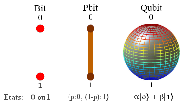
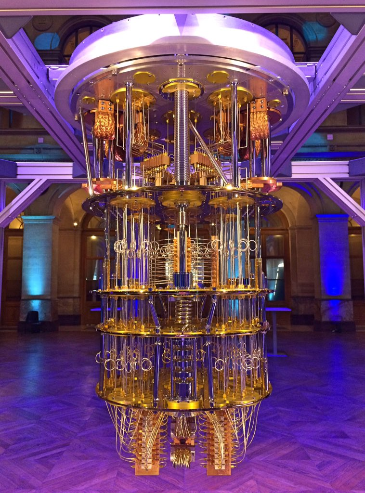

Ici vous trouverez les informations nesesaires afin de comprendre comment marche un ordinateur quantique et quelles sont ses utilisations et limites.
Nous allons separer cette analyse en 2 parties :
Le principe et son utilisation
Le Qubit, un état d'information quantique
La technologie de traitement des données des ordinateurs quantiques n’est pas en bit comme un ordinateur traditionnel, mais utilise des unités de calcul appelées qubit.
Le qubit est l'unité de stockage d’information que les ordinateurs quantiques utilisent afin de faire des calculs.
En effet, cette unité, le qubit est comme un bit conventionnel en 0 ou 1, mais peut prendre n’importe quel état avec la combinaison de A.|0 ⟩+B.|1 ⟩ oû A²+B²=1. oû A et B sont 2 nombres complexes.
Lors de la mesure de la valeur du qubit, les seules réponses pouvant être obtenues sont | 0 ⟩ ou | 1 ⟩ [4], avec les probabilités | A |² et | B |².
Ces unités permettent d’obtenir théoriquement des résultats grâce à la loi de rose et la loi de moore qui sont des mplications mathématiques à toute type de question mathématique, physique, biologique jusque ici impossible à calculer pour un ordinateur standard.
Comme dans tout matériel informatique, il a besoin de refroidir, cependant l'ordinateur quantique a besoin d'avoir un énorme système de refroidissement qui doit allez jusqu'au zéro absolu, 0°K ou -273.15°C. Afin que l'ordinateur de surchauffe pas il est nécessaire d'avoir un refroidissement parfait durant les calculs.
Des utilisations dans tout les dommaines possibles
Ces utilisations sont énormes peu importe le domaine scientifique, social, juridique, économique dans lequel elles seront utilisées, il aura comme pour les ordinateurs des nécessités a utilisé ces nouvelles technologies.
Par exemple, l'ordinateur quantique permet des avancées considérables dans le domaine de la médecine en particulier dans celui des vaccins ou encore à développer de nouvelles technologies de pointe pour faire avancer la recherche dans le secteur du spatial, de la biologie ou encore de l’industrie.
Son investissement et ces limites
La course a l'informatique quantique, la nouvelle rue vers l'or?
L'ordinateur est un monstre de technologie. Il contient énormément de composants issus des dernières recherches scientifiques récentes.
De ce fait plein d'entreprise se font la course sur cette nouvelle technologie comme IMB, GOOGLE, MICROSOFT ou D-WARE.
Les gouvernements ont aussi investi des milliards dans des projets de développement d’ordinateur quantique comme la France « qui par un engagement public-privé de 1,8 milliards d'euros », mais aussi le chine et les état-unis.
Leur objectif : une utilisation avec le maximum de qubit le plus longtemps possible sans surchauffe.
La production de telles machines demande des ressources et technologies de pointe afin de miniaturiser aux maximums les composant tout en gardant un maximum d'efficacité.
Les limites de l'utilisation du quantique
L'informatique quantique poses toujours des problèmes sur différents secteurs que la recherche et l'investissement massif cherche toujours à résoudre.
Donc voici les principaux problemes relevé:
La surchauffe des ordinateurs
Des problèmes de securité informatique
L'impact environnemental
Prix de creation extrenement élevé
Les lois absentes sur ce secteur